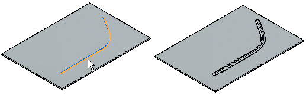

Bead command
Bead command
Constructs a bead feature on a sheet metal part. A bead feature is often used to stiffen a sheet metal part.
In the ordered environment, you can construct a bead with an open

or closed profile.

In the synchronous environment, you can construct a bead with an open sketch element,
or closed sketch region.
When constructing a bead profile using multiple elements, the element must be a continuous set of tangent elements.

How do I
Construct a beadMove or edit a bead
Learn more
Constructing beadsLook up more details
Bead command barBead Options dialog box
Bead command bar